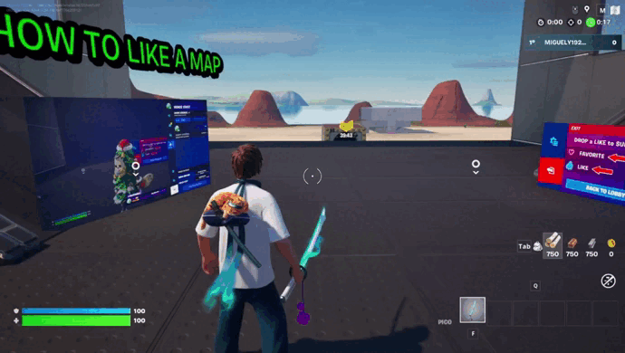

|
Presionando W,A,S y D en tu teclado podrás caminar y moviendo el ratón con click derecho podrás mover la cámara
|
|
Presionando
el botón de espacio podrás saltar y sortear obstaculos, tambien al
acercarte a una pared y saltar podras darle otra vez para saltar
completamente la pared, también sirve para bajar del autobús de batalla a el mapa.
|
 |
Al
presionas intro con una tecla de movimiento podras correr eso te ayuda
a moverte más rapido, también a sortar y abrir las puertas mas rápido,
presta atención a la barra de resistencia si se agota no podras correr
hasta que se rellene
|
|
Puedes
picar presionando o manteniendo click izquierdo en el ratón esto te
ayuda para destruir estructuras y para hacer daño a enemigos sobre todo
cuando empieza la partida y no tienes armas
|
|
Al
caer en el mapa tendras que abrir copfres presionando E al abrir te
darán armas que utilizas para matar a jugadores, existen armas, curas y
bombas para escapar o matar a el enemigo
|
|
Puedes apuntar un arma para tener mas precisión al disparar, presiona click derecho para apuntar
|
|
Para
disparar simplemente tienes que darle a click derecho, cada arma tiene
distintas balas, distancia y daño, asegurate de utilizar el arma
correspondente
|